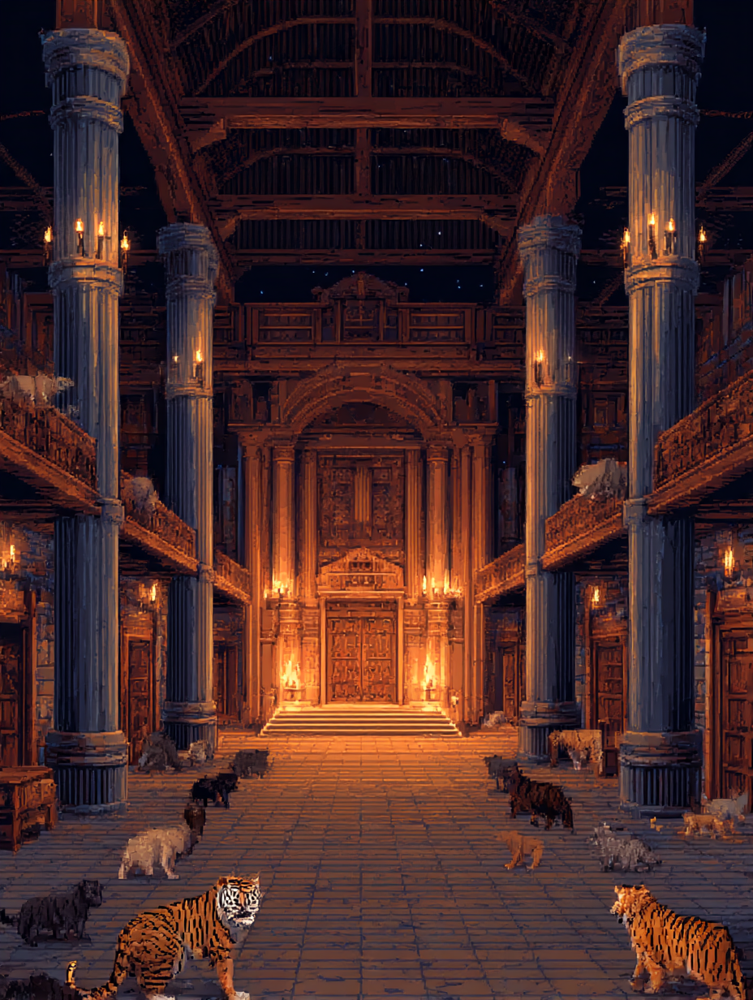
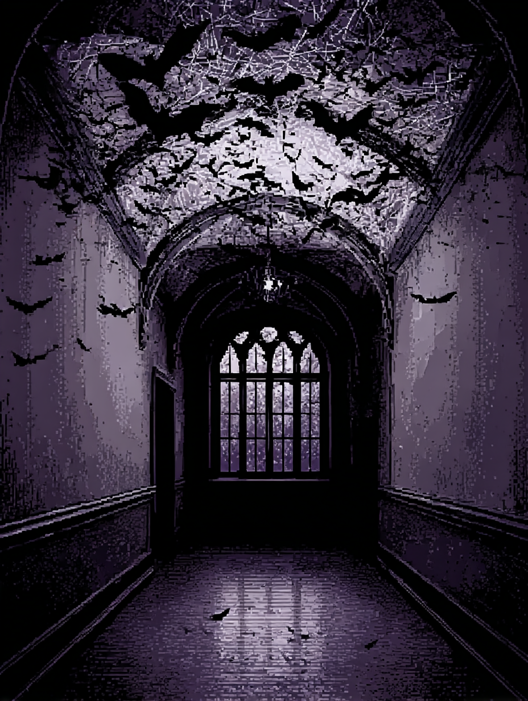
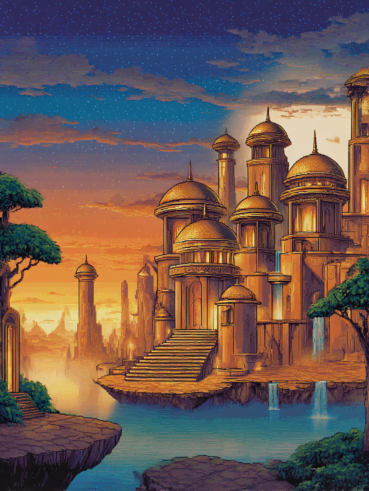
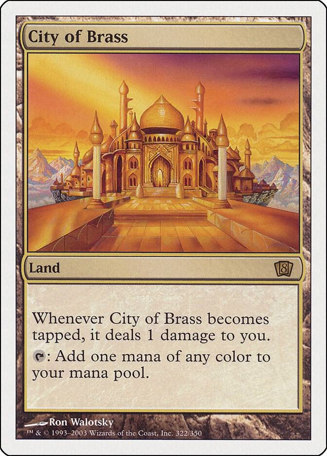
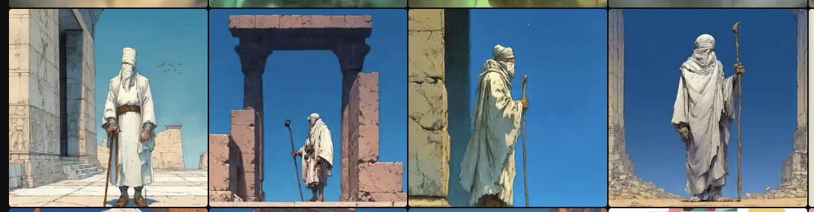
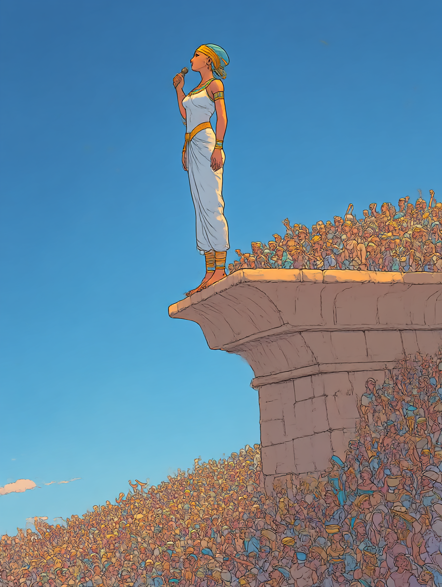
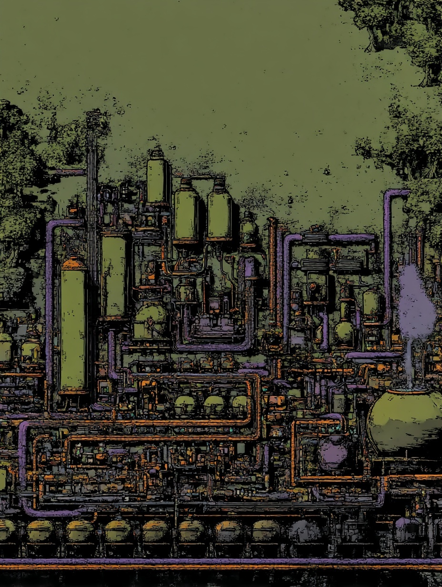

Pixel Art Dreams
My first uses of Midjourney were aborted attempts. I’d try to do something, it wouldn’t work, I’d be frustrated. It took a lot of trial-and-error to even understand what I could use it for.
But, after a bit, I started getting it. First I took images I found online and liked and fed it to generate variations. Then I started feeding it old media I liked. (Devil May Cry, Hellboy, whatever.)
In parallel, I had been keeping a dream journal this year. Not sure why, I just did it. I’d been having strange dreams whose meaning or logic I could not disclose: being stuck in a corridor with a friend with giant spiders and bats coming at us. Walking a hall filled with felines.
It couldn’t be… Unless?



Midjourney.
Midjourney nailed it. I fed in an extra one: a lucid dream that I had in 2012 about flying through a city made of gold, using as inspiration a card from MTG and it nailed that one too.

WOTC.
This grew into marathon sessions of Midjourney where I’d keep generating for 5 hours straight.
I’d go to bed and close my eyes and all I’d see in my mind’s eye were more images for me to generate… I could generate that, and that, don’t forget as you fall asleep…
It even started affecting my dreams. At some point I was trying to generate things in Ancient Egypt with a striking blue sky.

Midjourney.
Soon I dreamt of that exact same scenery, with a woman singing beautifully. Of course the first thing I did as soon as I wrote the dream down was generating it.

Midjourney.
And, actually, now that I’m writing I recall, last night I dreamt of a purple-and-green factorio: an aesthetic I’ve been developing on Midjourney…

Midjourney.